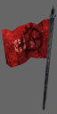

Introduction to AssaultCube
AssaultCube has a simple theme; two teams on a single battle ground. There's no story, just on-going destruction & ownage.
Their operations range from simple annoyances (such as introducing hallucinogenic drugs into air conditioning systems of largely populated offices or malls), to well planned gruesome bombings. They'll target civilians, as well as politicians, lobbyists or religious leaders and their employees.
Their selfish motto: "Terror for the sake of terror, because you all suck!"

Any associated parties to this extravagant task-force remain well concealed for obvious reasons. Their primary targets are highly unpredictable terrorists and organized criminals such as the CLA, where intelligence, infiltration and stealth would just be a waste of time.
Their policy is simple: "Shoot first, then ask questions later... if anyone is left to ask".
Weapons
There are eight weapons available for you to frag & gib your enemies with. Every player spawns with the standard outfitting of three weapons: a knife, a pistol & a primary weapon. Grenades must be picked up along the way. To change your primary weapon, press B for the weapons menu and select the one you want. Next time you spawn, you will spawn with that weapon.
 Swiss Tech Combat Blade DR-88
Swiss Tech Combat Blade DR-88A sharp and swift blade. It's your last resort when you run out of ammo, as well as your best friend in humiliating snipers and campers. "Slash" with this weapon & you'll gain two frags, instead of one.
 Mk-77 Semi-Automatic Pistol
Mk-77 Semi-Automatic PistolYour basic sidearm. A powerful secondary weapon, yet typically less effective at range. The small magazine size is something you need to keep an eye on. The akimbo power-up makes this weapon twice as deadly and much more fun!
 MTP-57 Assault Rifle
MTP-57 Assault RifleThe large calibre deals a substantial amount of damage, with a surprising amount of recoil. A long barrel ensures accuracy even at high range. It can become difficult to control when shooting bursts of more than three bullets.
 Precision Tech AD-81 Sniper Rifle
Precision Tech AD-81 Sniper RifleSemi-Automatic Sniper rifle, equipped with a 2x scope. The large calibre can do a frightful amount of damage. Though naturally most accurate when used with the scope, the highly ergonomic design allows the experienced shooter to operate it from the hip as well.
Not recommended on its own for hand-to-hand combat, since it can take some time to recock the weapon. Shots to the head from this weapon produce a "headshot" instead of a frag, which causes instant death and counts for two frags, instead of one.
 A-ARD/10 Sub-machine Gun
A-ARD/10 Sub-machine GunThis weapon releases a deadly spray of bullets at a high rate of fire. However, due to the short barrel and small calibre, its man-stopping power is limited, and effectiveness ceases at longer ranges. Like the Assault Rifle, its accuracy gets worse the longer your bursts.
 V-19 Combat Shotgun
V-19 Combat ShotgunA 7-round semi-automatic shotgun.
This powerful weapon can shred your opponents to pieces - if you're close enough.
 TMP-M&A Carbine
TMP-M&A CarbineThe perfect weapon for the most accurate shooter. Faster than a sniper rifle and more deadly than an automatic; just make sure you're pointing it in the right direction. Its 10-round magazine will let you dispose of five unarmoured opponents before you need to reload. Its ability to "pierce" your enemies' armour vests will increase your chances to stand your ground.
 SAL-T3 Grenade
SAL-T3 GrenadeThis grenade is your friend in mid range fights. Its timer is adjusted to two seconds which makes it quite useful for quick responses to your enemies fire bursts. Kills from this weapon produce a "gib" instead of a frag.
Weapon statistics
The below statistics should give an indication on how each weapon can be used in AssaultCube.
Mouse-over each acronym in the left-row to understand what it means.
| Swiss Tech Combat Blade DR-88 | Mk-77 Semi-Automatic Pistol | MTP-57 Assault Rifle | Precision Tech AD-81 Sniper Rifle | A-ARD/10 Submachine Gun | V-19 Combat Shotgun | TMP-M&A Carbine | SAL-T3 Grenade | |
| RTD | - | 1.40 | 2.00 | 1.95 | 1.65 | 2.40 | 1.80 | 1.00 |
| ATD | 0.50 | 0.16 | 0.12 | 1.50 | 0.08 | 0.80 | 0.72 | 0.65 |
| MDPS | 50 | 18 | 22 | 82 | 16 | - | 60 | 200 |
| SPREAD | - | 53 | 18 | 50 | 45 | - | 10 | - |
| MS | - | 10 | 20 | 5 | 30 | 7 | 10 | 1 |
| EAPP | - | 20 | 40 | 10 | 60 | 14 | 15 | - |
| AQOS | - | 60 | 60 | 20 | 90 | 28 | 30 | 0 |
| MAQ | - | 110 | 80 | 20 | 120 | 28 | 40 | 3 |
Item pickups
 Ammobox
AmmoboxThis box supplies ammunition for the primary weapons. To find out the exact contents, read the EAPP line in the weapon stats above.
The time it takes to respawn this item depends on the amount of players in the match at that time:
1-2 players = 8 seconds
3-4 players = 6 seconds
5+ players = 4 seconds
This item supplies ammunition for the pistol. To find out the exact contents, read the EAPP line in the weapon stats above.
The time it takes to respawn this item depends on the amount of players in the match at that time:
1-2 players = 8 seconds
3-4 players = 6 seconds
5+ players = 4 seconds
 Akimbo
AkimboThis item lets you fire with two pistols for 30 seconds.
Make sure you take advantage of the crazy firing rate!
This item respawns every 60 seconds.
This sweet health pack cures your damaged body with 33hp.
The time it takes to respawn this item depends on the amount of players in the match at that time:
1-2 players = 20 seconds
3-4 players = 15 seconds
5+ players = 10 seconds
Helmet armour pickups give you 25 points of protection. This item respawns every 25 seconds. Armour works on a tiered approach. The more armour you have, the more damage it absorbs.
0-25 armour = 16% protection.
26-50 armour = 33% protection.
51-75 armour = 37% protection.
76-100 armour = 41% protection.
Note: How armour works, is it reduces the amount of damage caused by the bullet. So if a bullet normally causes 21 damage and you have 78 armour points, then: 21 damage, minus 41% (the armour protection) = the bullet causes 12 damage.
The part of that bullet that doesn't affect the health, depletes the armour instead, i.e. it causes 9 damage to the armour.
 Kevlar armour
Kevlar armourKevlar armour pickups give you 50 points of protection. This item respawns every 25 seconds. Armour works on a tiered approach. The more armour you have, the more damage it absorbs.
0-25 armour = 16% protection.
26-50 armour = 33% protection.
51-75 armour = 37% protection.
76-100 armour = 41% protection.
Note: How armour works, is it reduces the amount of damage caused by the bullet. So if a bullet normally causes 21 damage and you have 78 armour points, then: 21 damage, minus 41% (the armour protection) = the bullet causes 12 damage.
The part of that bullet that doesn't affect the health, depletes the armour instead, i.e. it causes 9 damage to the armour.
Grab this to get a single grenade fitted to your pocket. In LSS mode, all grenade spawns fit 2 grenades to your pocket. Also in LSS mode, pistol magazine pickups turn into grenades.
The time it takes to respawn this item depends on the amount of players in the match at that time:
1-2 players = 9 seconds
3-4 players = 8 seconds
5+ players = 7 seconds
Game modes
AssaultCube offers 14 different multi-player game modes (5 free-for-all, 5 team based and 4 flag based (3 of which are team based)), 8 single-player game modes and 1 mode for co-operative map editing.
You can vote for any of these multi-player modes by using the menu. This can be found by pressing ESC while connected in-game. After choosing a mode, you will then be asked to choose a map available in the list provided.
Multi-player free-for-all modes
With these modes, your aim is to frag anyone & everyone! They're more suited for smaller games.- Deathmatch: No teams, it's everyone for themselves!
- Survivor: No teams, it's everyone for themselves! Survivor is a round based combat, so if you die, you will need to wait until the end of the round before you can respawn. The round ends when no enemies are left alive.
- Pistol Frenzy: A deathmatch mode with pistols as the main weapon (no primary weapons). Grenades and knives are also present in this mode. Make sure YOU get to the akimbo first!
- Last Swiss Standing: Survive the battle with the help of your knife. Grenades are also present in this mode. If you die, you will have to wait until the end of the round until you can spawn again. All pistol pickups turn into grenades and grenade pickups fit 2 grenades to your pocket.
- One Shot, One Kill: Each player starts with 1hp, a sniper rifle, a knife and no pickups. Survive with your sniper, or humiliate with your Swiss steel. If you die, you will need to wait until the end of the round before you can spawn again. The round ends when no enemies are left alive.
Multi-player team modes
Don't frag your team mates! Most suited to bigger games!- Team Deathmatch/Pistol Frenzy/Last Swiss Standing: Two teams fight each other. The team that has the most frags at the end of the game wins.
- Team Survivor: Two team in round based combat. If you die, you will have to wait until the end of the round until you can spawn again. The round will end when all members from one team are dead.
- Team One Shot, One Kill: Each team member starts with 1hp, a sniper rifle, a knife and no pickups. Survive with your sniper, or humiliate with your Swiss steel. If you die, you will have to wait until the end of the round until you can spawn again. The round ends when all members from one team are dead.
Multi-player flag modes
Suited best to large games (6+ players), these modes provide special tactics and ways to score and win the game!
- Hunt the Flag: Find the enemy flag, frag the flag bearer and collect the flag to score. If no-ones holding your flag, the score won't count, so be sure to protect your own flag bearer! If the flag bearer collects the enemy flag, they gain an extra bonus point.
- Team Keep the Flag: There is only one flag. Grab the flag and keep it, you'll score 1 flag point for every 15 seconds you keep the flag. Be sure to protect your team's flag bearer!
- Keep the Flag: There is only one flag, and everybody will want it. If you have it, be careful, because everyone else will want to frag you to stop you scoring! Score one point for every fifteen seconds you can hold the flag, if you can manage that long!
- Capture The Flag: Two teams fight each other. Steal the enemy team's flag and bring it back to your base to score. If your team's flag has gone, someone will have to go and recover it first. Note: there is a special HUD for the CTF mode.
{kind=link}
Single-player bot modes
AssaultCube comes with bots to offer singleplayer gaming. To start a botmatch, press ESC and navigate to Singleplayer.
There you can choose the mode, skill, number of bots and the map to play on.
Please keep in mind that AssaultCube's main approach is multi-player gaming, so the bots may lack certain features, such as
human intelligence.
- Bot Team Deathmatch: Two teams made up of bots and yourself fight each other to the death. The team with the most frags at the end of the round wins.
- Bot Deathmatch: It's every man and A.I. for themselves! Dismantle those bots!
- Bot One Shot, One Kill and Team One Shot, One Kill: You and the bots start with 1hp, a sniper rifle, a knife and no pickups. Survive with your sniper, or humiliate with your Swiss steel.
- Bot Pistol Frenzy You'd better stop those bots from getting to the akimbo, or you're going to be Swiss cheese.
- Bot Last Swiss Standing The LSS bots aren't the sharpest tools in the box, but their blades make up for it.
- Bot Team Survivor With A.I. by your side you're bound to survive to the end of the round. Be the best!
- Bot Survival Collect as much ammunition and armour as you can lay your hands on before you move into the 'killing zone' (check the minimap), because the bots are coming for you. Wave upon wave of demented avengers...